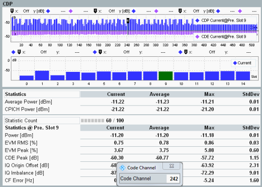

Code domain power (CDP) and code domain error (CDE) views display the code domain monitor and the results of CDP vs slot and CDE vs slot measurements.

The code domain monitor displays the CDP and CDE for all code channels, measured in the "Preselected Slot". In the upper diagram, the displayed trace type (CDP and/or CDE) can be selected.
In the CDE view, the number of displayed bars (code channels) corresponds to a spreading factor (SF), see "Spreading Factor". In the CDP view, the fixed number of 512 codes is displayed. A signal component with a spreading factor smaller than the SF used for display, occupies several adjacent bars.
The bar of the code channel selected for the CDP/CDE vs slot measurements is green and tagged via the marker .
The lower diagram covers a time interval of 15 slots. The CDP or CDE of the downlink dedicated physical channel of selected code channel is displayed, see "Code Channel".
The bar of the slot preselected for statistical results and CD monitor is green, see "Preselected Slot".
The table below the graphs provides statistics on the total output power of NodeB and CPICH power. For CPICH power, only channels with channelization code c256, 0 are considered. Each current value is averaged over a frame.
Also, statistical results measured in the "Preselected Slot" are displayed, for example, information concerning the peak CDE level. The peak CDE is defined as the maximum value for the CDE for all codes. For a peak CDE measurement, conform to 3GPP TS 25.141, section 6.7.4, the signal under test has to use SF 256.
For additional description of statistical results, refer to "Detailed Views: TX Measurement".
For additional information, refer to "Common View Elements".